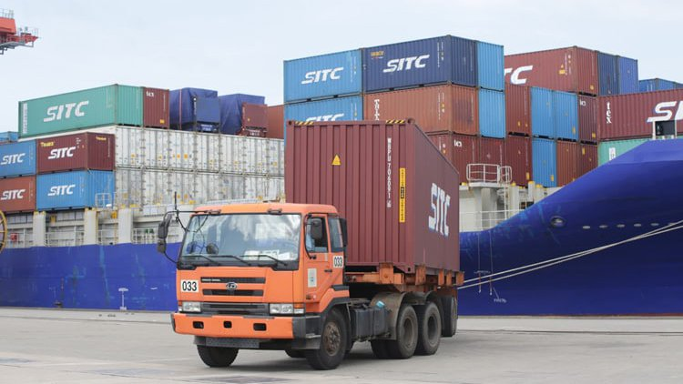
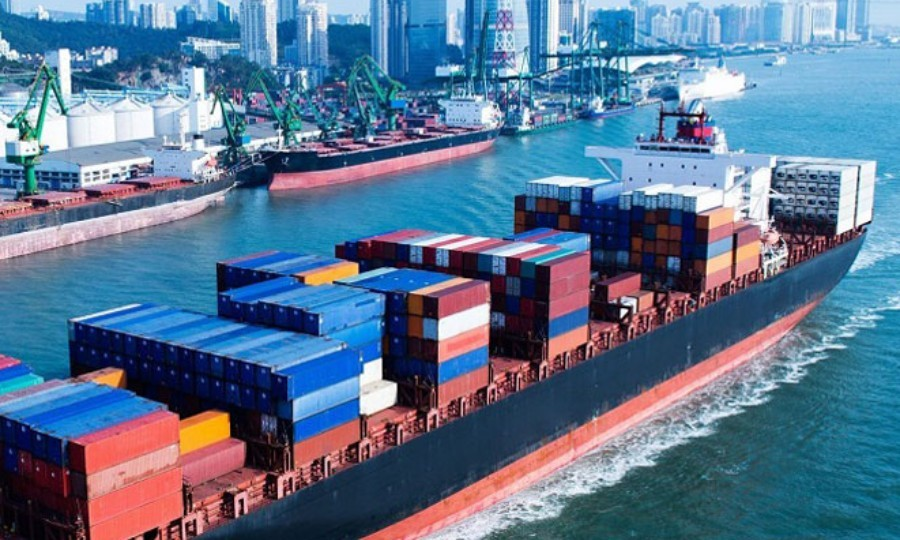
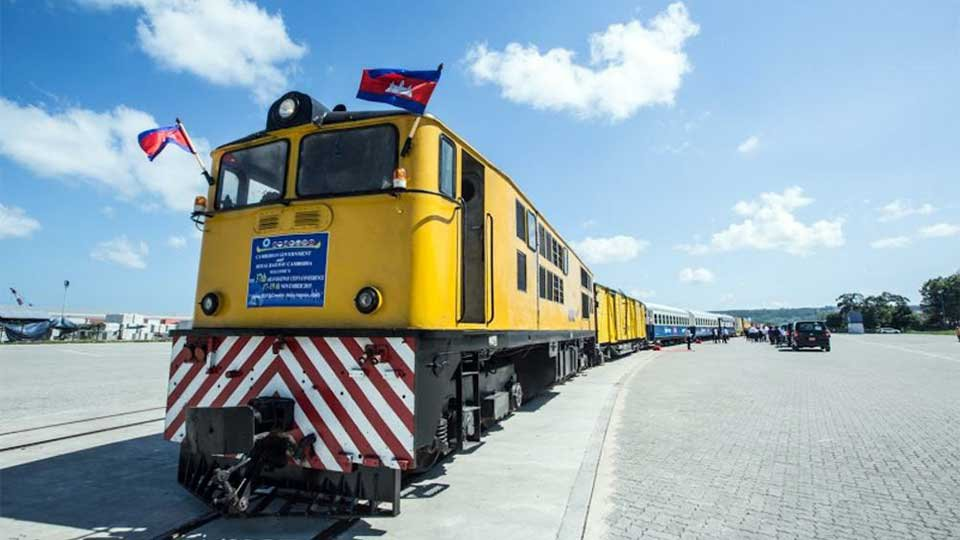
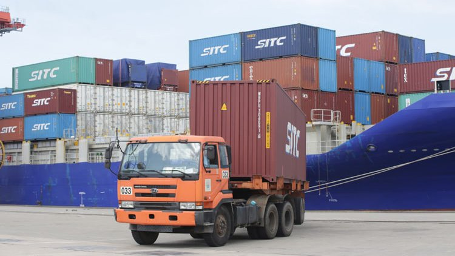
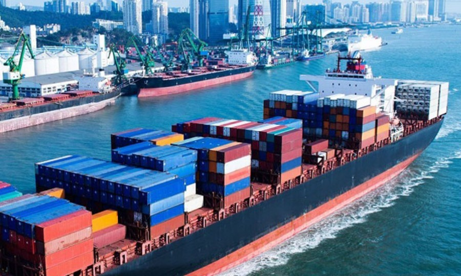
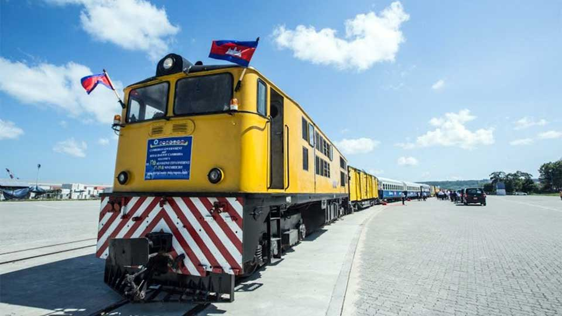

ភ្នំពេញ ៖ លោកទេសរដ្ឋមន្រ្តី ស៊ុន ចាន់ថុល រដ្ឋមន្រ្តីក្រសួងសាធារណការ និងដឹកជញ្ជូនកម្ពុជា បានថ្លែងថា វិស័យដឹកជញ្ជូន និងភស្តុភារកម្ម កាន់តែមានសារៈសំខាន់ថែមទៀតសម្រាប់អភិវឌ្ឍសង្គម- សេដ្ឋកិច្ច នៃប្រទេសនានានៅទូទាំងអាស៊ី និងប៉ាស៊ីហ្វិក ក្នុងរយៈពេលប៉ុន្មានឆ្នាំខាងមុខ។
នាឱកាសអញ្ជើញដឹកនាំ គណៈប្រតិភូចូលរួមកិច្ចប្រជុំ ពិគ្រោះយោបល់កម្រិតខ្ពស់ថ្នាក់តំបន់ លើកទី១ នៅក្នុងតំបន់អាស៊ី របស់វេទិកាដឹកជញ្ជូនអន្តរជាតិ នាថ្ងៃទី២២ ខែវិច្ឆិកា ឆ្នាំ២០២២ នៅទីក្រុងបាងកក ប្រទេសថៃ លោកទេសរដ្ឋមន្រ្តី ស៊ុន ចាន់ថុល បានសង្កត់ធ្ងន់ថា «វិស័យដឹកជញ្ជូន និងភស្តុភារកម្ម ដែលមានលក្ខណៈប្រទាក់ក្រឡាគ្នា គឺកាន់តែមានសារៈសំខាន់ថែមទៀតសម្រាប់ការអភិវឌ្ឍសង្គម និងសេដ្ឋកិច្ចនៃប្រទេសនានានៅទូទាំងអាស៊ី និងប៉ាស៊ីហ្វិក ក្នុងពេលប៉ុន្មានឆ្នាំខាងមុខ»។
លោក បន្ដថា ហេដ្ឋារចនាសម្ព័ន្ធដឹកជញ្ជូននានា គឺជាកត្តាជំរុញដ៏សំខាន់មួយសម្រាប់ការអភិវឌ្ឍ និងជាកត្តាជំរុញឱ្យមានកំណើនសេដ្ឋកិច្ចជាវិជ្ជមាន ក៏ដូចជារឹតបន្តឹងបរិយាប័ន្នសង្គមផងដែរ។ លោកថា វេទិកាដឹកជញ្ជូនអន្តរជាតិកាលពីឆ្នាំ២០២១ (The ITF Transport Outlook 2021) បានព្យាករណ៍ថា តម្រូវការដឹកជញ្ជូនសម្រាប់អ្នកដំណើរ និងការដឹកជញ្ជូនទំនិញនឹងកើនឡើងយ៉ាងខ្លាំង នៅក្នុងទសវត្សរ៍ខាងមុខ ជាពិសេសនៅក្នុងតំបន់អាស៊ី ដែលវាឆ្លុះបញ្ចាំងពីការអភិវឌ្ឍសេដ្ឋកិច្ច និងការតភ្ជាប់ដែលមានភាពប្រសើរឡើង ហើយតម្រូវការដឹកជញ្ជូនអ្នកដំណើរទូទាំងពិភពលោក ត្រូវបានព្យាករណ៍ថានឹងកើនឡើងបីដងនៅឆ្នាំ២០៥០។
លោកទេសរដ្ឋមន្រ្តី បានឱ្យដឹងថា មានកត្តាជាច្រើននៅពីក្រោយនិន្នាការវិជ្ជមានទាំងនេះ ដែលរួមចំណែកដល់តម្រូវការដឹកជញ្ជូននាពេលអនាគតនៅតំបន់អាស៊ី ហើយឯកឧត្តមក៏បានលើកឡើងពីនិន្នាការទាំងដប់ ដែលគូសបញ្ជាក់ដោយធនាគារអភិវឌ្ឍន៍អាស៊ី (ADB) ស្តីពី «ការប្រមើលមើលអនាគតនៃការដឹកជញ្ជូននៅទូទាំងអាស៊ី និងប៉ាស៊ីហ្វិក» សម្រាប់ការយកមកពិចារណាផងដែរ។
សូមរំលឹកថា លទ្ធផលនៃការពិភាក្សា នឹងត្រូវបានយកទៅអនុវត្ត ដើម្បីបន្តទៅកាន់កិច្ចប្រជុំកំពូលរបស់វេទិកាដឹកជញ្ជូនអន្តរជាតិ (ITF) នាឆ្នាំ២០២៣ ខាងមុខ ដែលជាសម័យប្រជុំលើកទី៧ នៃគណៈកម្មការសេដ្ឋកិច្ច និងសង្គមសម្រាប់អាស៊ី និងប៉ាស៊ីហ្វិក របស់អង្គការសហប្រជាជាតិ (UN-ESCAP) ស្តីពីការដឹកជញ្ជូន និងព្រឹត្តិការណ៍ដឹកជញ្ជូនសកល និងក្នុងតំបន់ផ្សេងទៀតក្នុងឆ្នាំ២០២២ និង២០២៣។ បច្ចុប្បន្ននេះវេទិកាដឹកជញ្ជូនអន្តរជាតិ (ITF) មានប្រទេសសមាជិក ចំនួនប្រាំបីនៅអាស៊ី ហើយស្វែងរកការបន្តពង្រីកវិសាលភាពការងារ និងវត្តមានរបស់ខ្លួន នៅក្នុងតំបន់បន្ថែមទៀត៕